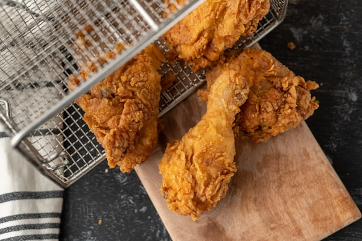
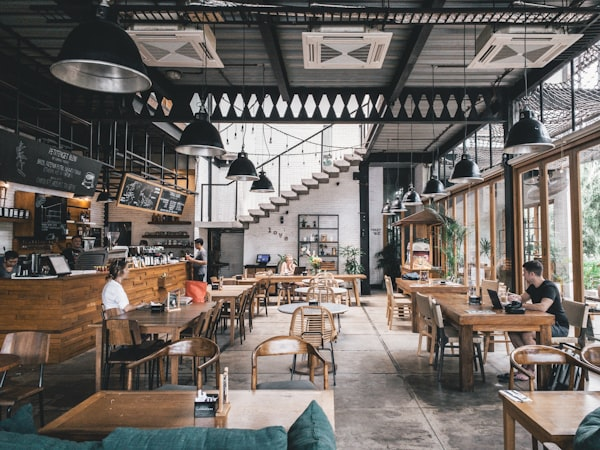
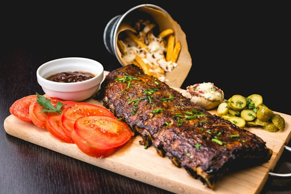
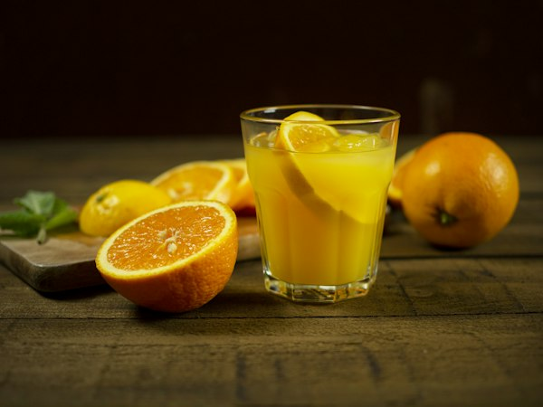

KULIT KRISPI GURIH
PEDASNYA BIKIN NAGIH!
Nikmati sensasi gurih renyah Kulit Ayam Krispi melimpah berpadu dengan oseng cumi kecombrang, paru empuk, dan aneka sambal sedap khas Nusantara.
Kenikmatan & Suasana Mak Igun
Intip hidangan menggoda selera, kriuknya kulit ayam renyah keemasan, dan kehangatan suasana warung Nasi Kulit Mak Igun cabang Surabaya Pusat.






Kunjungi Warung Mak Igun
Berada di pusat kota Surabaya yang strategis, mudah diakses, dekat dengan pusat belanja dan perkantoran.
Cabang Surabaya Pusat
-
Alamat Lengkap
Jl. Pregolan No. 11, Tegalsari, Kec. Tegalsari, Kota Surabaya, Jawa Timur 60262
-
Jam Operasional
Buka Setiap Hari: Pukul 10.00 – 00.00 WIB (Tengah Malam)
-
Fasilitas & Layanan
Makan di Tempat (Dine-in), Bungkus Bawa Pulang (Takeaway), Pesan Antar Online (GoFood, GrabFood, ShopeeFood), Tempat Bersih & Nyaman, Parkir Tersedia.
-
Metode Pembayaran
QRIS (BCA, Mandiri, GoPay, OVO, Dana, ShopeePay), Transfer Bank, dan Tunai (Cash).
ℹ️ Cabang Surabaya Lainnya:
Cabang Tenggilis: Jl. Raya Tenggilis No. 60, Surabaya Timur (Instagram: @nasikulitmakigun.tenggilis)
Peta Lokasi Jl. Pregolan 11 Surabaya
Tegalsari, SurabayaKontak & Media Sosial Mak Igun
Mau pesan untuk acara kantor, kumpul keluarga, info kemitraan waralaba, atau kirim kritik dan saran? Hubungi kami langsung melalui saluran resmi berikut!
Instagram Cabang
Info menu terbaru, promo harian, dan keseruan cabang Surabaya Pusat.
@nasikulitmakigun.surabayapusatWhatsApp Pemesanan
Fast response untuk pesanan porsi banyak, reservasi, & kemitraan.
0877-7772-8228 (Chat WA)Info Kemitraan
Tertarik membuka franchise / cabang di kotamu? Hubungi manajemen.
Hubungi Hotline 0877-7772-8228Mager Keluar Rumah? Pesan via Aplikasi Delivery Favoritmu!
Cari "Nasi Kulit Mak Igun - Surabaya Pusat / Pregolan" di aplikasi favoritmu:
Kritik & Saran untuk Mak Igun
Kepuasan Anda adalah prioritas utama kami. Sampaikan pesan, kesan, atau saran Anda!